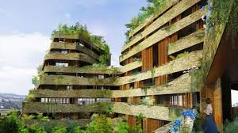
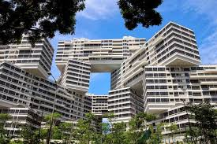

المجمعات التجارية في السعودية شهدت منذ عام 2015 حتى اليوم، انخفاضا في المساحة القابلة للتأجير إلى النصف لأن التركيز تزايد على الترفيه والمطاعم، وما يميز العقار هو زيادة وقت الزائر في المطاعم والترفيه المجمعات التجارية في السعودية شهدت منذ عام 2015 حتى اليوم، انخفاضا في المساحة القابلة للتأجير إلى النصف لأن التركيز تزايد على الترفيه والمطاعم، وما يميز العقار هو زيادة وقت الزائر في المطاعم والترفيه ن المجمعات التجارية في السعودية شهدت منذ عام 2015 حتى اليوم، انخفاضا في المساحة القابلة للتأجير إلى النصف لأن التركيز تزايد على الترفيه .

المجمعات التجارية في السعودية شهدت منذ عام 2015 حتى اليوم، انخفاضا في المساحة القابلة للتأجير إلى النصف لأن التركيز تزايد على الترفيه والمطاعم، وما يميز العقار هو زيادة وقت الزائر في المطاعم والترفيه المجمعات التجارية في السعودية شهدت منذ عام 2015 حتى اليوم، انخفاضا في المساحة القابلة للتأجير إلى النصف لأن التركيز تزايد على الترفيه والمطاعم، وما يميز العقار هو زيادة وقت الزائر في المطاعم والترفيه ن المجمعات التجارية في السعودية شهدت منذ عام 2015 حتى اليوم، انخفاضا في المساحة والمطاعم .
المجمعات التجارية في السعودية شهدت منذ عام 2015 حتى اليوم، انخفاضا في المساحة القابلة للتأجير إلى النصف لأن التركيز تزايد على الترفيه والمطاعم، وما يميز العقار هو زيادة وقت الزائر في المطاعم والترفيه المجمعات التجارية في السعودية شهدت منذ عام 2015 حتى اليوم، انخفاضا في المساحة القابلة للتأجير إلى النصف لأن التركيز تزايد على الترفيه والمطاعم، وما يميز العقار هو زيادة وقت الزائر في المطاعم والترفيه ن المجمعات التجارية في السعودية شهدت منذ عام 2015 حتى اليوم، انخفاضا في المساحة القابلة للتأجير إلى النصف لأن التركيز تزايد علي .


المجمعات التجارية في السعودية شهدت منذ عام 2015 حتى اليوم، انخفاضا في المساحة القابلة للتأجير إلى النصف لأن التركيز تزايد على الترفيه والمطاعم، وما يميز العقار هو زيادة وقت الزائر في المطاعم والترفيه المجمعات التجارية في السعودية شهدت منذ عام 2015 حتى اليوم، انخفاضا في المساحة القابلة للتأجير إلى النصف لأن التركيز تزايد على الترفيه والمطاعم، وما يميز العقار هو زيادة وقت الزائر في المطاعم والترفيه ن المجمعات التجارية في السعودية شهدت منذ عام 2015 حتى اليوم، انخفاضا في المساحة والمطاعم .